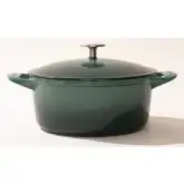
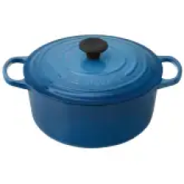
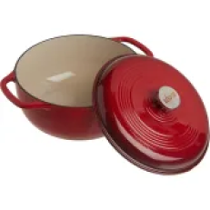
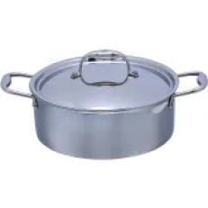
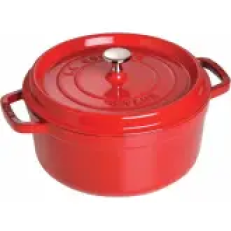

-

Made in Dutch Oven
Check Price on Made In
The Made In blew us away with its nonstick qualities, heat distribution, and moisture retention. Plus it's
available in
several beautiful colors. Read More
Pros
- Excellent cooking results
- Comfortable handles
- Affordable
Cons
-

Le Creuset Enameled Cast Iron Signature Round Dutch Oven, 5.5 qt., Marseille
Check Price on Amazon
Check Price on Walmart
TA long-time favorite, Le Creuset's Dutch oven does not disappoint. Note that the slightly larger size means it
needs a
bit more space than others. Read More
Pros
- Large handles
- Excellent cooking results
- A long-time cook's favorite
Cons
- Large size can crowd out other cookery
-

Lodge Enameled Cast Iron 6-Quart Dutch Oven
Check Price on Amazon
Check Price on Target
This Dutch oven cooks as well as any high-end version and is a great buy in any color, as long as you don't
mind it's
slightly narrow bottom. Read More
Pros
- Cleans easily
- Multiple color options
- Scores high in a variety of cooking tests
Cons
- Smaller-than-average-base
-

HexClad 5-Quart Dutch Oven
Check Price on Amazon
This stainless steel Dutch oven is lightweight and excels at browning and baking bread. However, its
lightweight build
means cooking results can vary. Read More
Pros
- Lightweight
- Even, fast heating
- Dishwasher safe
Cons
- Baking results sometimes take longer
- Unable to produce fond
-

Staub Cast Iron 5.5-Quart Round Cocotte
Check Price on Amazon
Highly rated and a pro with any cooking task you throw at it, the Staub Cast Iron Dutch oven is well worth its
price...and weight. Read More
Pros
- Cleans easily
- Well built, solid
- Cooks evenly
Cons